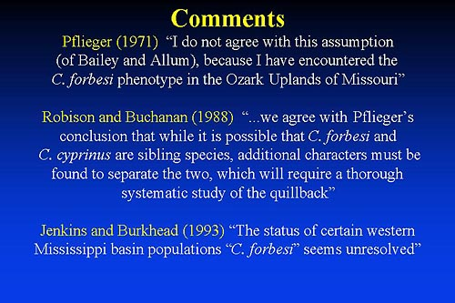

Pflieger (1971):
I do not agree with this assumption (of Bailey and Allum), because I have encountered the C. forbesi phenotype in the Ozark Uplands of Missouri
Robison and Buchanan (1988):
...we agree with Pflieger's conclusion that while it is possible that C. forbesi and C. cyprinus are sibling species, additional characters must be found to separate the two, which will require a thorough systematic study of the quillback
Jenkins and Burkhead (1993):
The status of certain western Mississippi basin populations "C. forbesi" seems unresolved